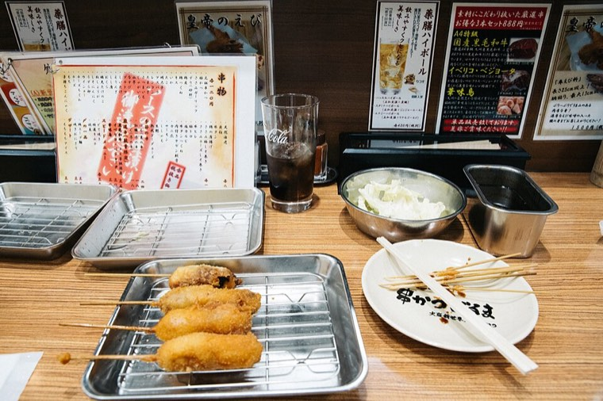
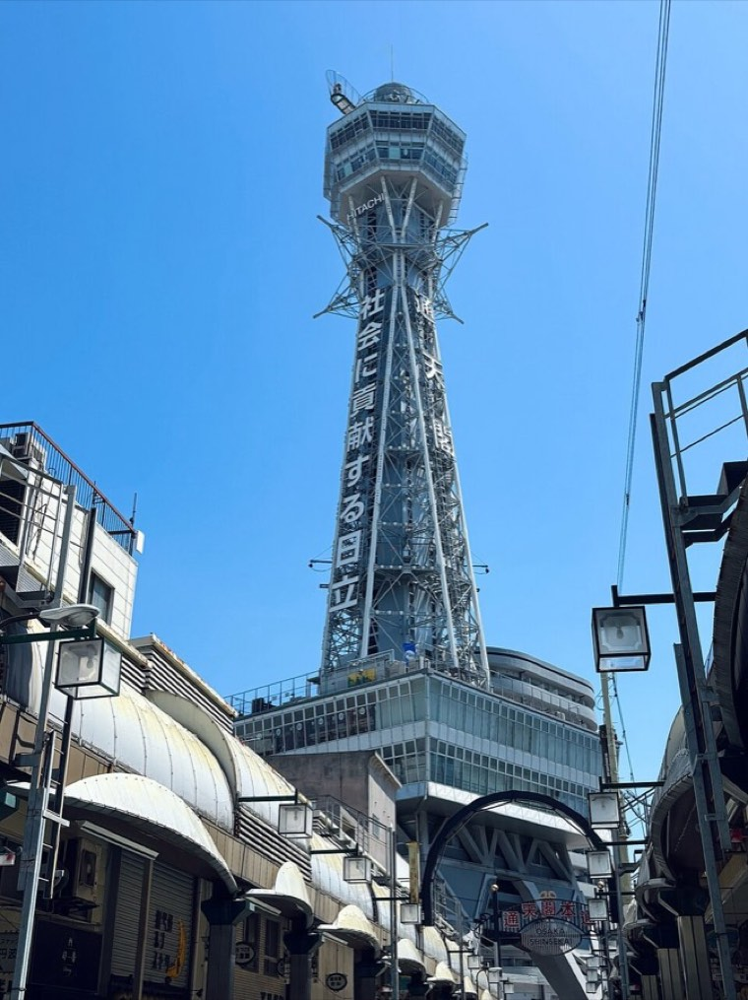
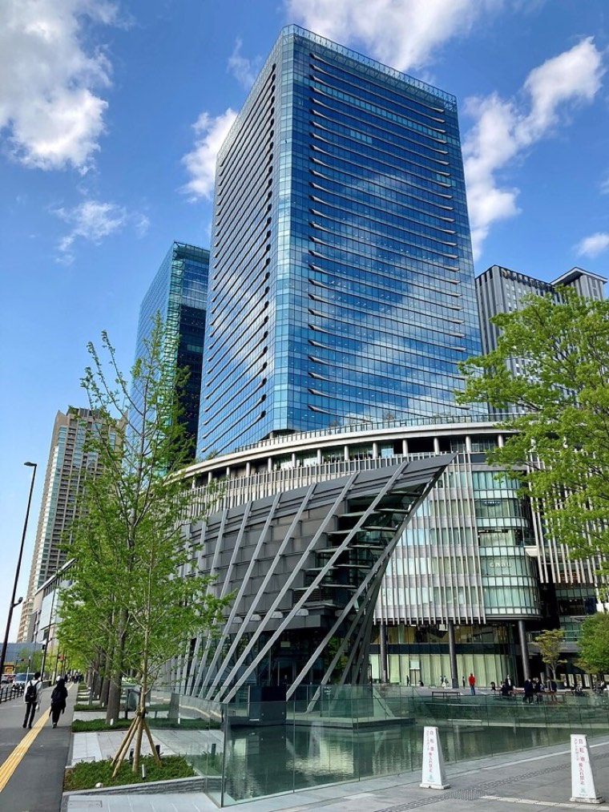
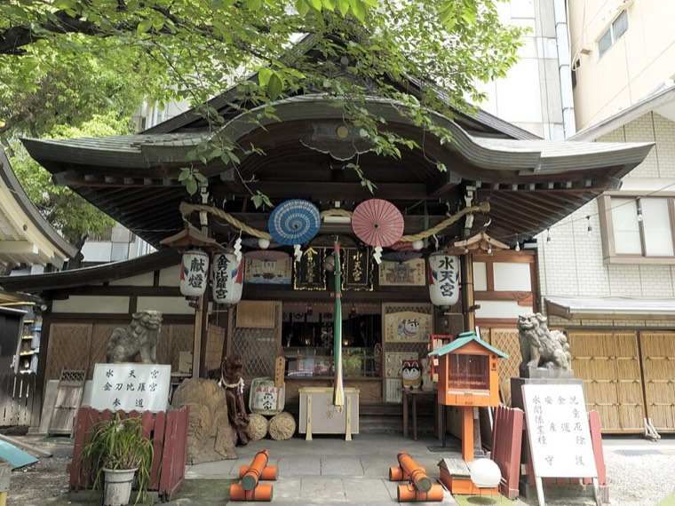
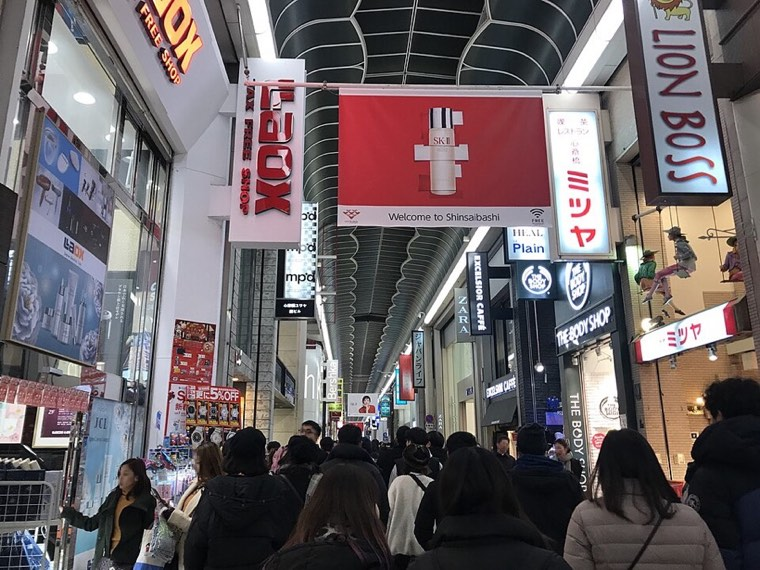
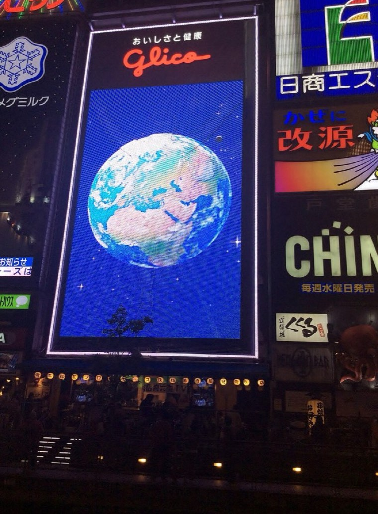
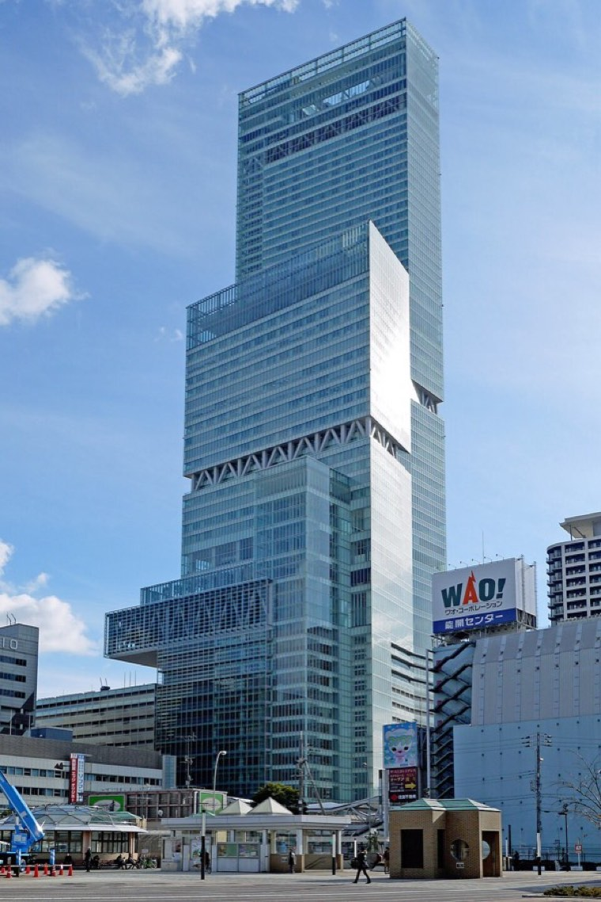
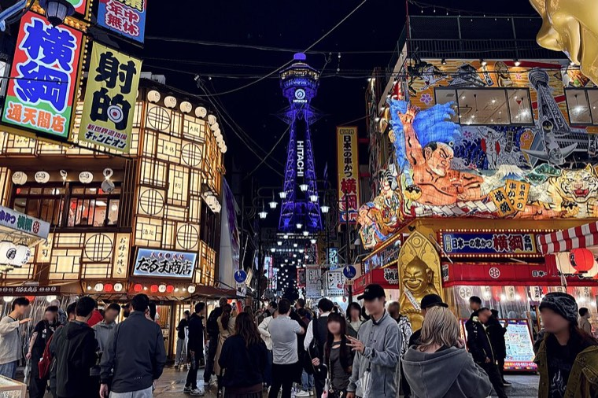

去程・IT210tigerlight
TPE07:00
桃園 第一航廈KIX10:25
關西 第一航廈無託運行李・僅手提
Osaka trip
雨下到下午 3 點左右，晚上變陰或放晴；帶折傘、穿防水的鞋
三天中天氣最好的一天，傍晚轉涼，帶件外套
早上出門最冷，雨具放隨身
整理自 tenki.jp、Yahoo!天気、ウェザーニュース的週間預報，越接近出發越準：tenki.jp 大阪市
住宿 · 2 晚
Toyoko Inn Osaka Tsutenkaku Mae
長按地址或電話可複製
景點
新世界地標，走路 5 分
串炸、將棋老街，往動物園前站方向
草皮廣場和咖啡店，走路約 15 分
新世界旁邊，週一休
在天王寺公園裡
現代風山門的老寺，走路約 15 分
生意興隆的神社，恵美須町站附近
動漫、模型、電器街，往北走約 20 分
日本最古老的官寺之一，走路約 30 分
便利商店・藥妝・超市
24 小時，就在飯店旁
大型藥妝，通天閣旁
14:00–23:00，晚上也能買
24 小時，便當、飲料便宜
零食、藥妝、伴手禮
新世界・通天閣（飯店周邊）
梅田
心齋橋
蛋包飯始祖
道頓堀・難波
天王寺・阿倍野
高湯章魚燒，HARUKAS 附近
USJ
CityWalk 3F，章魚燒名店集合
Day 1
先放行李，輕裝出門，大部分行程在室內或商店街，下雨也能走
去程只有手提行李，可先線上報到，液體每瓶 100ml 以下，行動電源要隨身。機場捷運首班車趕不上，要開車、叫車或搭 24 小時的國光客運 1819
飛行約 2 小時 25 分（日本比台灣快 1 小時）
入境時出示 Visit Japan Web 的 QR Code，出關後到南海電鐵站，直接刷 Suica 進站。入境可能要排 30–60 分，已預留時間
從新今宮站通天閣口（東口）步行約 10 分，經過新世界，15:00 後才能入住，先寄放就好

簡單吃

白天先拍照、逛新世界，想上去也可以 Day 2 晚上再來

館內傳單架拿集章卡，兩棟共 5 個章，集滿換限定貼紙（送完為止）。商店 11:00–21:00，下午去沒問題

梅田的神社，以戀愛成就聞名，從 Grand Front 走過去約 20 分。參拜 7:00–22:00，御守 9:00–18:00，御朱印 10:00–17:00

沿心齋橋筋商店街往南逛到道頓堀，整條有遮雨棚，下雨也好逛，逛到 17:30

在戎橋拍固力果跑跑人，下面挑一兩家順路逛

300 公尺高展望台看夜景＋柯南平次和葉特展，最後入場 21:30，大人 ¥2,200，待約 1 小時
Day 2
12:30 用餐，15:00 VIP，晚上居酒屋
早餐 06:30–09:00，吃飽再出發
提早到餐廳報到，14:00 前吃完，留時間走到 VIP 櫃檯
VIP 方案 5，15:00–19:30，開始前 30 分鐘（14:30 前）到「VIP エクスペリエンス受付」報到
從新今宮站通天閣口走回飯店約 10 分
還有體力就去，飯店走路 5 分，最後入場 21:15

Day 3
前一晚先把行李裝好，提早出門辦退稅
早餐 06:30 開始，液體、噴霧類放託運，行動電源、鋰電池放隨身，要退稅的免稅品集中放一袋，海關可能會看
走到南海新今宮站約 10 分
順序很重要：免稅品要放託運的話，先到海關確認，確認完才去虎航櫃檯託運，先託運可能拿不到退稅；免稅品放隨身的話，出境時再確認就好。櫃檯關閉時間以虎航規定為準
用完剩下的日圓零錢
13:50（台灣時間）抵達桃園第一航廈